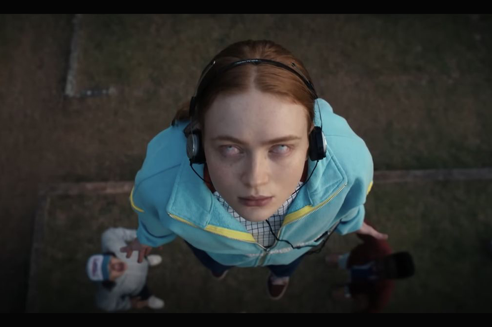
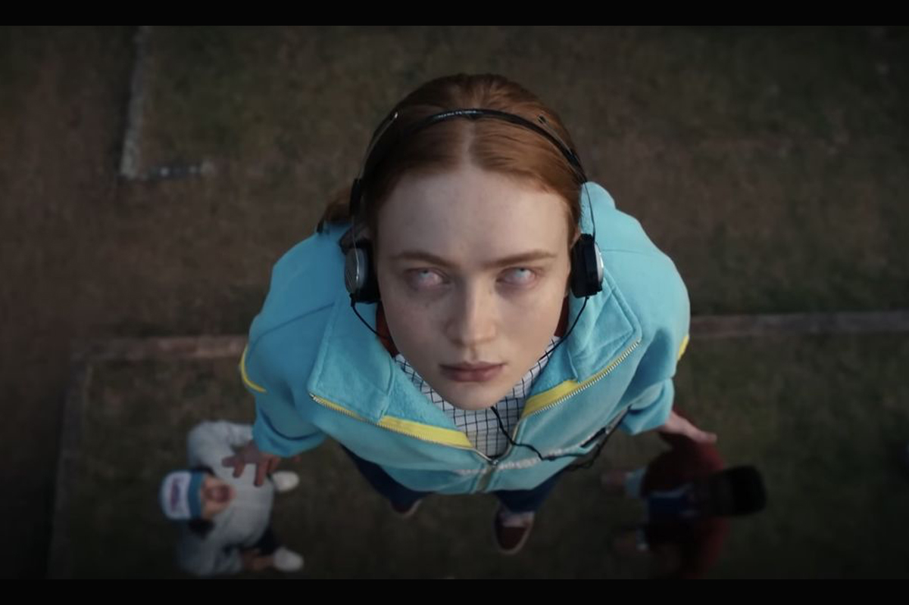

Resumem de la cuarta temporada
La cuarta temporada ocurre seis meses después de La Batalla de Starcourt, que trajo terror y destrucción a Hawkins. Luchando con los sucesos posteriores, el grupo de amigos se separa por primera vez, y el navegar por las complejidades de la escuela secundaria no ha facilitado las cosas. Durante este momento vulnerable, surge una nueva y horrible amenaza sobrenatural, que presenta un espantoso misterio el cual, si se resuelve, finalmente podría poner fin a los horrores del Upside Down.